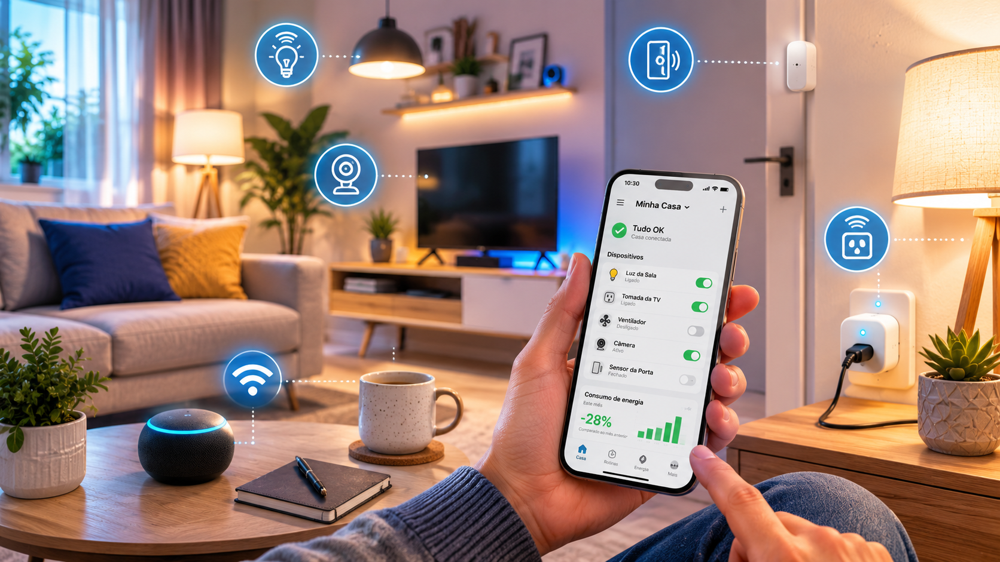

Como começar uma casa inteligente gastando pouco
Veja como iniciar sua automação residencial sem gastar muito, quais dispositivos acessíveis comprar primeiro, como evitar escolhas ruins e como expandir sua casa inteligente aos poucos.

Ter uma casa inteligente deixou de ser algo caro ou distante. Com dispositivos simples como lâmpadas, tomadas, sensores e assistentes virtuais, já é possível automatizar tarefas sem reformas e sem grandes investimentos.
O segredo está em começar pelo que realmente melhora o seu dia a dia, escolhendo dispositivos acessíveis, compatíveis e úteis.
Neste guia, você verá como começar gastando pouco, quais produtos priorizar e como expandir sua automação residencial aos poucos.
O que é uma casa inteligente?
Uma casa inteligente usa dispositivos conectados para facilitar tarefas, melhorar o conforto, aumentar a segurança ou reduzir desperdícios. Isso pode incluir acender luzes pelo celular, programar tomadas, controlar aparelhos por voz, monitorar ambientes com câmeras Wi-Fi ou criar rotinas automáticas.
O ponto mais importante é entender que você não precisa automatizar tudo de uma vez. Começar com um único dispositivo bem escolhido já pode trazer benefícios reais para a rotina.
Vale a pena começar gastando pouco?
Sim, desde que você escolha produtos que resolvam necessidades reais. A automação residencial econômica funciona melhor quando começa com itens simples, fáceis de instalar e compatíveis com aplicativos populares.
Vale mais a pena para quem busca praticidade, controle via celular, rotinas automáticas, conforto sem reformas e uma forma simples de testar a automação residencial antes de investir mais.
Dispositivos acessíveis para começar
Para iniciar gastando pouco, o ideal é escolher dispositivos simples, úteis e fáceis de instalar, sem reformas elétricas complexas.
Lâmpada inteligente
Permite ligar, desligar, ajustar brilho, mudar cor e programar horários pelo aplicativo ou comando de voz.
Tomada inteligente
Controla aparelhos conectados, cria horários e pode desligar automaticamente luminárias, ventiladores e outros itens.
Controle infravermelho
Reúne controles de TV, ar-condicionado e outros aparelhos em um único app, aproveitando equipamentos que você já possui.
Assistente virtual
Facilita comandos por voz, criação de rotinas, lembretes, músicas e integração entre dispositivos inteligentes.
Sensor de presença
Aciona luzes automaticamente ao detectar movimento. É útil em corredores, banheiros, áreas de passagem e garagem.
Câmera Wi-Fi
Ajuda no monitoramento interno ou externo, com instalação simples e acesso remoto pelo celular.
Dica de compra: antes de escolher, compare avaliações, compatibilidade com assistentes e qualidade do app.
Ver ofertas de produtos inteligentesPasso a passo para começar
A melhor forma de iniciar uma casa inteligente gastando pouco é seguir etapas simples, validando cada compra antes de expandir.
1. Escolha um problema real
Pense no que você quer facilitar: iluminação, segurança, controle de aparelhos ou economia de energia.
2. Comece por um ambiente
Escolha um cômodo de uso frequente, como quarto, sala ou escritório.
3. Compre um dispositivo básico
Lâmpada inteligente ou tomada smart são boas escolhas para começar.
4. Teste o aplicativo
Verifique se o app é fácil de usar e se a conexão Wi-Fi funciona bem.
5. Crie uma rotina simples
Exemplo: acender a luz às 18h ou desligar uma luminária após determinado horário.
6. Expanda aos poucos
Adicione novos dispositivos apenas quando fizer sentido para sua rotina e orçamento.
Como economizar na compra
Para economizar, não compre tudo de uma vez. Compare avaliações, prefira dispositivos compatíveis entre si e escolha marcas com boa reputação.
- Verifique compatibilidade com Alexa, Google Assistente ou Siri.
- Confira avaliações recentes de outros compradores.
- Prefira lojas confiáveis e produtos com garantia.
- Evite produtos muito baratos sem informações claras.
- Comece com um dispositivo e teste antes de comprar vários.
O que comprar primeiro? Prioridades
| Produto | Prioridade | Benefício | Recomendado para |
|---|---|---|---|
| Lâmpada smart | Alta | Controle de iluminação, horários e cenas. | Quartos, salas e escritórios. |
| Tomada inteligente | Alta | Automatizar aparelhos simples. | Luminárias, ventiladores e pequenos equipamentos. |
| Controle infravermelho | Média/alta | Controlar equipamentos com controle remoto. | TV, ar-condicionado e aparelhos de som. |
| Assistente virtual | Média | Controle por voz e rotinas integradas. | Quem busca mais praticidade. |
| Sensor de presença | Média | Acionamento automático de luzes. | Corredores, banheiros e áreas de passagem. |
| Câmera Wi-Fi | Dependente da necessidade | Monitoramento remoto do ambiente. | Segurança básica residencial. |
Exemplos práticos de automações simples
Rotina de estudo ou trabalho
- Ligar a luminária automaticamente no horário definido.
- Ajustar cor ou intensidade da luz.
- Desligar automaticamente após determinado período.
Rotina de dormir
- Apagar luzes por comando de voz.
- Desligar tomada da luminária.
- Reduzir a intensidade antes de dormir.
Rotina na sala
- Ligar TV e ar-condicionado via app.
- Criar cenário de filme ou descanso.
- Usar assistente virtual para comandos rápidos.
Checklist para começar uma casa inteligente
Erros comuns ao começar
- Comprar vários dispositivos sem testar primeiro.
- Escolher produtos incompatíveis entre si.
- Ignorar a qualidade do Wi-Fi.
- Comprar interruptor inteligente sem verificar instalação elétrica.
- Escolher apenas pelo menor preço.
- Não verificar avaliações e garantia.
- Esperar economia instantânea sem planejamento.
Como expandir aos poucos
Depois de testar e gostar da experiência, adicione dispositivos conforme a rotina e o orçamento. Comece com iluminação, depois controle de aparelhos, sensores, câmeras e rotinas mais avançadas.
- Etapa 1: lâmpadas ou luminárias inteligentes.
- Etapa 2: tomadas inteligentes e controle infravermelho.
- Etapa 3: sensores de presença, abertura e temperatura.
- Etapa 4: câmeras, sensores de porta e alarmes.
- Etapa 5: rotinas automáticas avançadas e integração total.
Perguntas frequentes
Qual dispositivo é melhor para começar?
Uma lâmpada inteligente ou uma tomada inteligente. São acessíveis, fáceis de instalar e úteis para testar automações simples.
Preciso de assistente virtual?
Não. O assistente virtual é opcional. Você pode controlar os dispositivos diretamente pelo aplicativo no celular.
Casa inteligente economiza energia?
Pode ajudar, especialmente ao programar horários, evitar aparelhos ligados sem necessidade e controlar melhor o uso de iluminação.
Precisa fazer reformas?
Não necessariamente. Lâmpadas, tomadas, câmeras e controles infravermelho geralmente não exigem obras. Interruptores inteligentes podem exigir atenção elétrica.
Produtos baratos valem a pena?
Depende. Avalie segurança, avaliações, reputação da marca, compatibilidade e garantia antes de comprar.
Conclusão: comece pequeno e depois expanda
Começar uma casa inteligente gastando pouco é possível. O mais importante é escolher produtos que resolvam necessidades reais, tenham boa compatibilidade e sejam confiáveis.
Comece com um dispositivo simples, teste na prática e expanda aos poucos conforme seu uso e orçamento. A melhor automação é aquela que traz mais conforto, praticidade e controle para sua rotina.
Comece pelos itens mais úteis
Uma lâmpada inteligente, uma tomada smart e um controle infravermelho já podem transformar a experiência da sua casa sem exigir grandes investimentos.
Ver produtos recomendados